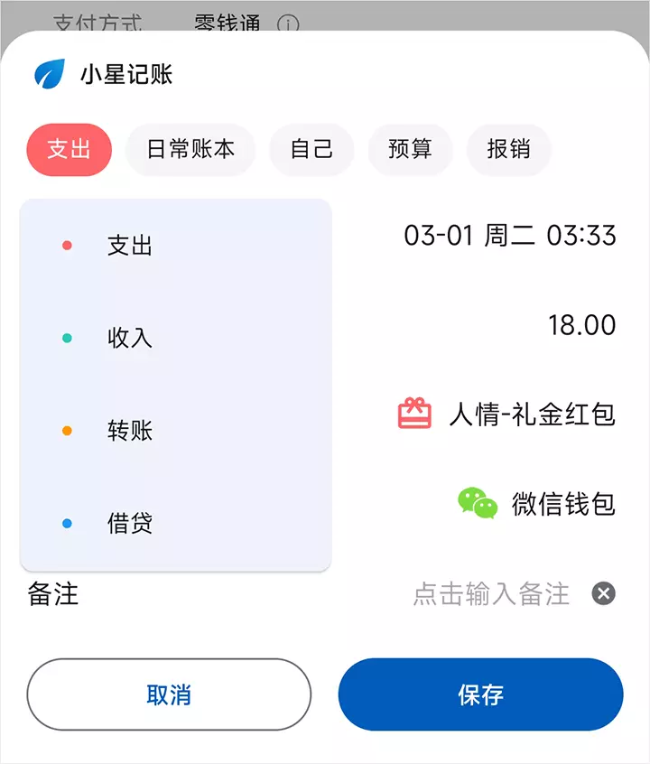
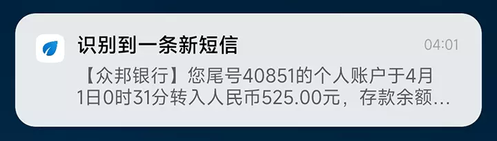
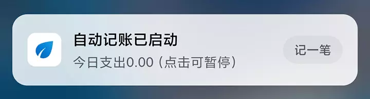
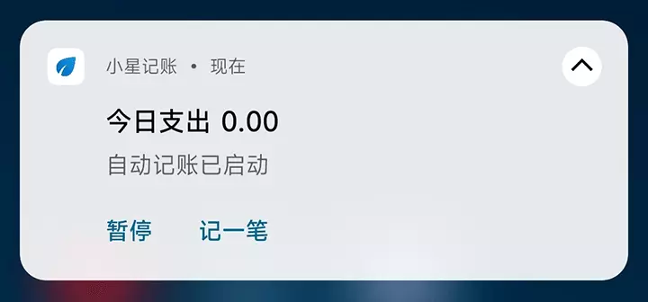

欢迎使用小星记账提供的自动记账服务。自动记账实现了在 支付宝、微信、云闪付、美团、京东、抖音 等应用支付成功后，或进入账单详情页时，自动识别界面上的账单信息，方便您一键记账，省去手动录入的麻烦和遗忘记账的烦恼~
请您在使用前完整地阅读本文档，了解具体的使用方法和常见问题，帮助您快速上手。
目前支持的场景如下：
【支付宝】
扫码支付、付款码支付、转账、提现、红包、账单详情、余额明细
账单详情入口：我的-账单-点击某一账单
余额明细入口：我的-余额-右上角”…“-余额变动明细-点击某一明细
温馨提示：天猫、淘宝、闲鱼、饿了么、公交扫码、高德打车等阿里系产品在支付成功后，如果没有弹出记账面板（比如是免密支付或没有支付宝的支付成功界面），可以点击系统通知栏内的【支付宝交易提醒通知】进行识别；或主动打开支付宝账单详情进行识别。
【微信】
扫码支付、付款码支付、转账、提现、红包、账单详情、零钱明细、零钱通明细、商家收款详情
账单详情入口：我-服务-钱包-右上角账单按钮-点击某一账单
零钱明细入口：我-服务-钱包-零钱-零钱明细-点击某一明细
零钱通明细入口：微信-我-服务-钱包-零钱通-右上角”…“-零钱通明细-点击某一明细
温馨提示1：微信发送红包由于支付后是直接将红包发送到聊天界面上，没有支付成功界面，因此需要您点开发送的红包才能完成识别；
温馨提示2：微信二维码收款不支持直接识别，可以在微信账单中打开对应的「账单详情」进行识别。
【云闪付】
扫码支付、付款码支付、账单详情、交易详情
账单详情入口：我的-账单-点击某一账单
交易详情入口：1. 消息-支付助手-查看；2. 首页-卡管理-点击具体银行卡-交易记录-点击某一记录-点击「更多」
温馨提示：当银行卡金额发生变动后，一般云闪付都会发出【动账提醒】通知，点进通知即可完成识别。
【美团、美团外卖】
美团支付、账单详情、余额明细
账单详情入口：我的-我的钱包（进入钱包）-我的账单-点击某一账单
余额明细入口：我的-我的钱包-点击余额-余额明细-点击某一明细
【京东、京东金融】
京东支付、账单详情
京东账单入口：我的-我的钱包-右上角账单图标-点击某一账单
京东金融账单入口：我的-我的账单-点击某一账单
【抖音、抖音极速版、抖音火山版】
抖音商城支付、账单详情
账单详情入口：我-右上角菜单按钮-我的钱包-账单-点击某一账单
【银行短信】
收到短信自动识别或手动添加短信内容进行识别
自动记账实现原理：基于Android系统的无障碍服务，在用户主动打开特定应用的特定界面时，自动调用系统接口获取一次界面数据。数据经过本地算法识别整理后，通过悬浮窗展示在用户面前，方便用户一键记账。
短信识别实现原理：系统在收到新短信时，会向所有应用发送广播通知，应用可以进行注册监听。当小星注册的监听器接收到新短信时，会自动对短信内容进行一次识别，如果符合识别规则，将会整理数据并通知用户，方便用户一键记账。
隐私安全保障：自动记账（含短信）的识别算法均为本地离线算法，获取的数据和对数据的处理仅在当前手机内部完成，数据不会上传网络或做其他形式的存储，可放心使用。
请先在应用内将自己名下的所有账户创建好，比如花呗、银行储蓄卡、信用卡等等，方便自动记账的时候识别与选择。
请根据应用提示正确开启小星记账的悬浮窗权限和无障碍服务开关（无障碍界面-已安装/已下载的服务-小星记账）。
温馨提示：无障碍设置里仅需开启无障碍服务开关，无需打开【无障碍快捷方式】
如果系统权限中含有 是否允许应用【后台弹出界面】，请设置开启。
如果需要进行短信识别，请主动在系统权限中开启读取短信权限和通知类短信读取权限。
为了防止退出应用后，无障碍服务被系统自动关闭，请将小星记账（不同机型的操作方式请查看本文档最下方）： 1.锁定后台； 2.设置小星记账的省电策略为无限制； 3.开启小星记账【自启动】开关； 4.允许小星记账显示通知。
部分机型系统（如小米手机的MIUI）会禁止其他应用在微信、支付宝、云闪付的支付界面上显示悬浮窗，因此在支付成功后，需要切换到桌面或退出界面才能正常显示记账面板。您可以在系统设置中搜索【支付保险箱】，关闭相应开关来取消该限制。其他机型若有类似情况也可以查找下系统中是否有支付保护相关的设置。
当服务正常启动时，通知栏上会显示【自动记账已启动】的通知。您可以任意打开支付宝或微信的某一账单详情页进行测试，看是否能正确显示自动记账面板。
当首次识别到界面上的账户数据时，如果没有在您的账户列表中找到合适的匹配项，则需要您手动选择一次，下次再识别到该账户时将会自动为您选择。同样的，当首次识别到界面上的商家和商品数据时，如果没有在您的明细类别中找到合适的匹配项，则需要您手动选择一次，下次再识别到该商家和商品数据时将会自动为您选择。
为了给您带来更好的体验，请尽量不要修改小星记账内置的类别名称，比如对于三餐类型，小星记账会根据账单支付时间智能地识别为早餐、午餐、晚餐或夜宵，如果这些类别不存在或被重命名，将无法自动映射。
当发现账单类型与实际不符时，可点击面板左上角的类型按钮切换支出、收入、转账、借贷类型。同样的，包括账本，角色，不计入预算，报销等都可以通过点击对应按钮进行调整。如下图：

开启短信识别后，当系统收到新的银行短信时，应用会显示一条【识别到新短信】的通知，您可以在有空的时候点击通知进行处理。或者在打开应用时，首页也会有相应提示，可以点击提示进入操作界面。

如果在系统收到新短信时，小星记账没有运行（比如进程已被系统清理），则无法自动识别。遇到这种场景，您可以主动复制短信内容，打开 主页侧边栏 - 自动记账 - 查看识别的短信列表 ，点击【+】输入短信进行识别。
如果在系统收到新短信时，小星记账正在运行，但是没有显示通知提示，则说明当前的短信格式尚未适配。您可以通过手动输入短信的方式进行测试，如果提示“暂不支持此短信格式”，请您选择上传内容，我们会尽快完成适配。
如果有部分银行的短信不需要自动识别，您可以通过界面上的【短信过滤】进行配置。
自动记账服务开启后，通知栏上会显示一个常驻通知：用于标识服务当前的运行状态，同时也可以降低服务被系统关闭的概率。
您可以通过修改自动记账界面中的【常驻通知样式】，根据使用习惯调整为【原生样式】或【经典样式】
经典样式：

原生样式：

其他说明：
如果不需要显示常驻通知，可以直接在系统通知管理里关闭【自动记账】的通知显示开关；
对于 Android 12 系统，经典样式如果出现显示不完整的问题，请改为使用原生样式。
已经按文档把所有权限都开启了，但依旧无法自动记账如何处理？
开启权限不代表服务正在运行哦，请您先确认通知栏内是否有【自动记账已启动】的通知，如果没有则说明服务目前没有启动，请您在系统设置中搜索【无障碍】，重新开启【小星记账-自动记账】的无障碍服务开关（请多试几次，直到显示通知为止），如果尝试多次依旧无效，请重启手机。
开启无障碍服务后，系统界面上提示“无法运行/此服务出现故障”
请重新开启开关，多试几次直到正常启动。如尝试多次依旧无法解决，请重启手机。
通知栏内已有【自动记账已启动】的通知，但在付款成功后偶尔还是不会弹出记账面板？
可以尝试滑动下界面，或者将手机先切换到桌面再切回支付界面试试。
支付宝账单识别时提示金额错误，需要手动输入？
这是支付宝账单最近的BUG：对于金额超过1000的账单，给到应用的无障碍数据都是异常的，导致无法正确识别，需要等待支付宝后续修复。
在微信、支付宝、云闪付等App里不会弹出记账面板，要切换到桌面才会显示
部分系统存在支付保护模块：在支付场景下会禁止其他应用显示悬浮窗。小米手机可以在系统设置中搜索【支付保险箱】，关闭相应应用的开关来取消该限制。其他机型也可以查找下系统设置中是否存在【支付保护】相关的设置。
在支付后不会直接弹出记账面板，需要到账单详情界面才会弹出
部分系统存在支付保护模块：在支付场景下会禁止其他应用显示悬浮窗。小米手机可以在系统设置中搜索【支付保险箱】，关闭相应应用的开关来取消该限制。其他机型也可以查找下系统设置中是否存在【支付保护】相关的设置。
小米手机升级MIUI 13后，屏幕边缘会出现小星记账的应用图标卡片，如何关闭
在无障碍设置里，将【小星记账-自动记账快捷方式】关闭即可。其他机型遇到类似问题也可以检查下无障碍设置，只需开启小星记账的无障碍服务，无需开启【无障碍快捷方式】开关。
小米手机使用短信识别，在接收到短信时会导致系统卡顿
这是MIUI最近版本的BUG。请在权限管理里将小星记账的【读取短信与彩信】和【通知类短信】设置为【始终允许】或【拒绝】，不要设置为【询问】。
云闪付【卡管理】，打开银行卡交易记录里的交易详情界面，不会立刻弹出记账面板
部分机型在打开这个界面后，需要主动滑动一下界面，或点击一下界面上的【更多】按钮才会触发识别操作。
是否支持识别银行类的App
不支持。您可以通过云闪付或银行短信来兼容一下。对于常用的场景也可以添加至【模板记账】来快捷添加。
系统语言为英文或繁体，无法自动记账
自动记账仅支持【简体中文】环境。
拼多多无法自动记账
最新版本的拼多多已经不支持无障碍服务，您可以尝试安装旧版本拼多多。
每次启动应用都要重新开启无障碍服务，如何处理
启动应用时，如果检测到无障碍服务是关闭状态，将会自动跳转至系统无障碍设置页。您可以通过关闭自动记账界面上的 【启动应用时检查服务状态】来跳过这个检测。请参考本文档最下方的操作说明，务必要将小星记账锁定后台，设置小星记账“自启动”，否则一旦退出应用，系统将会关闭无障碍服务。
为什么会突然无法自动记账
一般是由于系统强行关闭了无障碍服务导致。在遇到无法识别时，请先确认自动记账服务是否正常在运行，即通知栏内有【自动记账已启动】的通知。如果没有，可以重新开启无障碍服务，或重启手机解决。请参考本文档最下方的操作说明，务必要将小星记账锁定后台，设置小星记账“自启动”，否则一旦退出应用，系统将会关闭无障碍服务。
实际上不同的账单，识别时却显示“该账单已添加”
如果数据库内存在一笔金额一致，且时间相近的明细，可能会出现该提示。1.6.9版本开始，可以点击弹窗中的【再次识别】进行记录。
实际上已经保存过的账单，再次打开时却没有提示“该账单已添加”
判断是否已经添加过该账单至少需要金额和时间两个数据，即判断数据库中是否存在一笔金额一致且时间相近的明细。而类似于支付成功界面、红包界面等，由于界面上只有一个金额信息，没有时间信息，因此保存后再次打开，无法明确判断是否已经添加过该账单。如果想要获得明确判断，请在账单详情页面进行识别。
自动记账在输入备注时，记账面板会消失
请关闭键盘设置中的【隐私输入模式】。因为开启这个模式后，一旦弹出键盘，系统就会把界面上所有的悬浮窗都关闭。
自动记账在输入金额时，无法弹出输入法
请关闭键盘设置中的【隐私输入模式】。在开启这个模式后，无法支持在悬浮窗上输入内容。
开启了“后台纯净模式”，没有效果
后台纯净模式需要在您退出应用后才会生效，即在首页按系统【返回键】或【返回手势（屏幕右侧边缘往左滑）】退出应用。退出应用不会影响自动记账服务的正常使用（需将小星记账锁定后台并开启“自启动”）
自动识别到的数据有误
如果您在使用中发现自动识别到的数据（比如金额，日期，备注等）与实际账单不符，或者无法识别，请随时通过酷安、微信客服或邮箱反馈给我们，我们会第一时间处理和修复~
自动记账服务一直开着，是否会影响性能，或者增加耗电？
不会的，自动记账服务仅在特定应用的支付成功界面或账单详情界面才会被唤醒，其余时刻均处于休眠状态，不会对系统性能造成任何影响。而由于仅在特定界面才会执行，对耗电量的影响几乎微乎其微，经过测试，和正常使用没有区别，可放心开启。
自动记账无法正常使用如何处理
可以在系统设置中搜索【无障碍】，重新开启小星记账的无障碍服务，多试几次。如果依旧无法恢复，一般是系统服务出现问题，可以重启手机解决。平常无需自动记账的时候，建议可以点击通知栏内的暂停自动记账，减少服务被关闭的概率。
自动记账是本地服务，不会受网络因素影响，也不会自行关闭，只有可能是被系统被迫终止。所以我们只能尽可能地避免系统关闭它：为了保证服务不被系统误杀，请将小星记账锁定后台，允许小星记账显示通知，开启小星记账自启动，并将小星记账的省电策略修改为无限制。（部分系统没有省电策略的功能，也可以在应用设置里允许小星记账后台活动）
各机型请通过对应的操作来提升无障碍服务的稳定性：
小米：
1.开启通知栏权限：通知栏上能显示“自动记账已启动”的通知；
2.锁定后台：最近任务列表，长按小星记账，点击加锁按钮；
3.修改省电策略：最近任务列表，长按小星记账，点击设置按钮，进入应用信息界面：点击省电策略，修改为无限制；
4.开启自启动：开关同在应用信息界面；
5.允许后台弹出界面：应用信息界面 - 权限管理 - 后台弹出界面 - 设置为始终允许。
华为： 1.开启通知栏权限：通知栏上能显示“自动记账已启动”的通知；
2.锁定后台：最近任务列表，下拉小星记账；
3.关闭省电模式；
4.开启小星记账自启动：系统设置-应用-应用启动管理-小星记账-关闭自动管理，开启手动管理，将“允许自启动”“允许关联启动”和“允许后台活动”3个开关都打开。
iQOO、VIVO： 1.开启通知栏权限：通知栏上能显示“自动记账已启动”的通知；
2.锁定后台：最近任务列表，下拉小星记账；
3.小星记账系统设置里开启自启动和允许后台弹出界面；
4.系统的省电模式-后台耗电管理里，修改小星记账的策略为允许后台高耗电；
5.添加桌面组件进行保活：桌面添加小星记账任意组件，然后在桌面设置中开启“桌面组件关联启动主应用”。
OPPO：
1.开启通知栏权限：通知栏上能显示“自动记账已启动”的通知；
2.锁定后台：最近任务列表，点击右上角的菜单按钮，点击锁定；
3.桌面长按应用图标，点击应用信息，在设置内开启“允许自动启动”；
4.系统设置中，点击电池 - 自定义耗电保护 - 允许后台运行；返回 - 应用速冻 - 关闭小星记账的自动速冻。
三星：
1.开启通知栏权限：通知栏上能显示“自动记账已启动”的通知；
2.锁定后台：最近任务列表，点击“小星记账”的应用图标，在菜单中点击“锁定此应用程序”；
3.允许后台活动：最近任务列表，点击“小星记账”的应用图标，在菜单中点击“应用程序信息” - 电池 - 打开“允许后台活动”开关；
4.打开系统自带的“智能管理器”软件，点击“自动运行应用程序”- 开启小星记账自启动。
魅族：
1.开启通知栏权限：通知栏上能显示“自动记账已启动”的通知；
2.锁定后台：最近任务列表，长按小星记账，点击锁定按钮；
3.打开手机管家 - 隐私和权限 - 后台管理 - 设置小星记账为允许后台运行。
一加：
1.开启通知栏权限：通知栏上能显示“自动记账已启动”的通知；
2.锁定后台：最近任务列表，长按小星记账，点击锁定按钮；
3.系统设置中，点击电量优化，将小星记账设置为不优化。